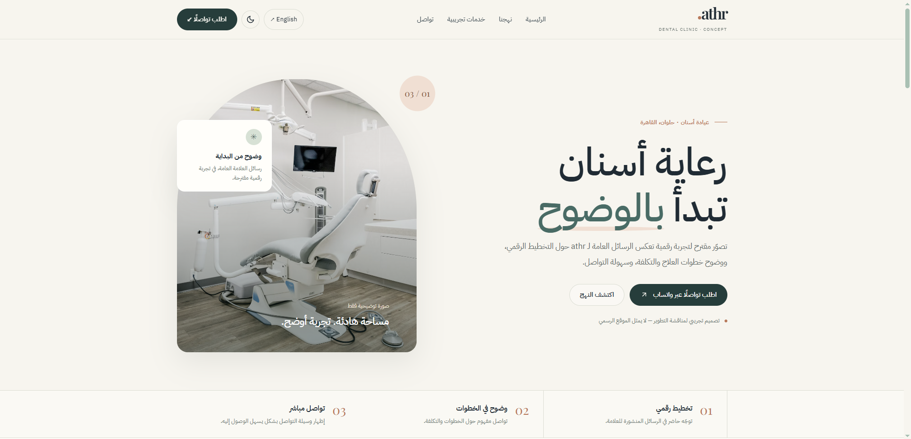
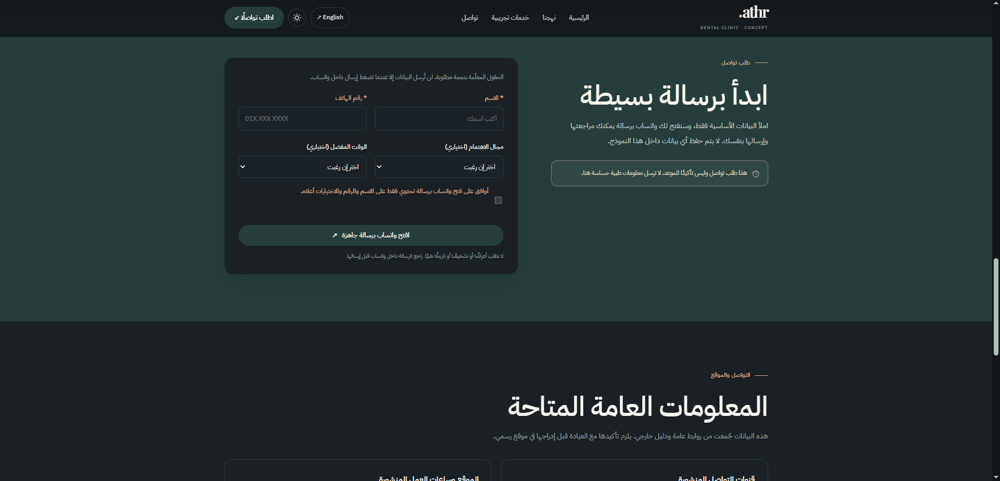

athr — Dental Clinic Concept
An unofficial design concept for a dental clinic website: calm editorial layout, Arabic and English, light and dark themes, and a WhatsApp contact request form.

Unofficial design concept — dental clinic website. It is not the clinic's official site.
How can a dental clinic present its digital planning, clear treatment steps and easy contact on one calm page? This is a self-initiated concept, not a client request.
Arabic-first right-to-left layout with an English toggle and a light/dark theme switch. A short contact form opens WhatsApp with a ready-to-send message without storing data. The page is clearly labeled unofficial, and unconfirmed services are marked as such.
A working single-page concept with an FAQ and public contact details. It is open about its status: it states that it does not represent the clinic and that all content needs the clinic's approval.
HTML · CSS · JavaScript · Hosted on Vercel